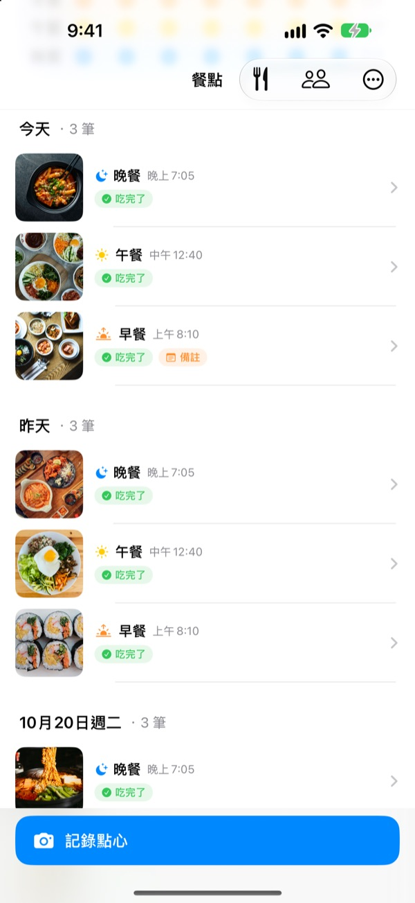
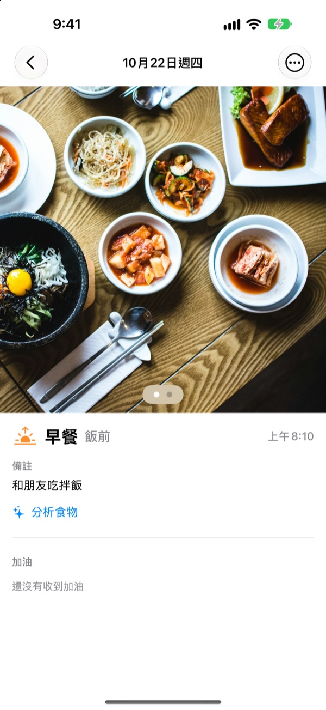
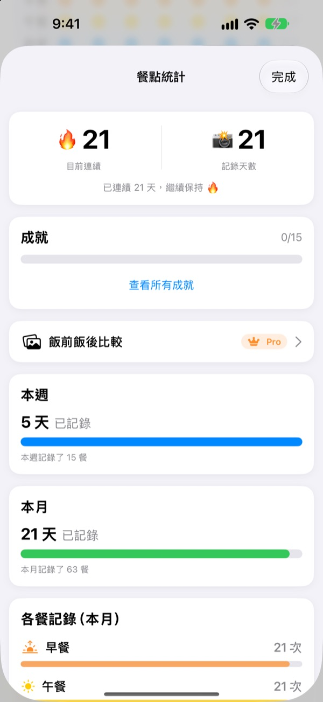
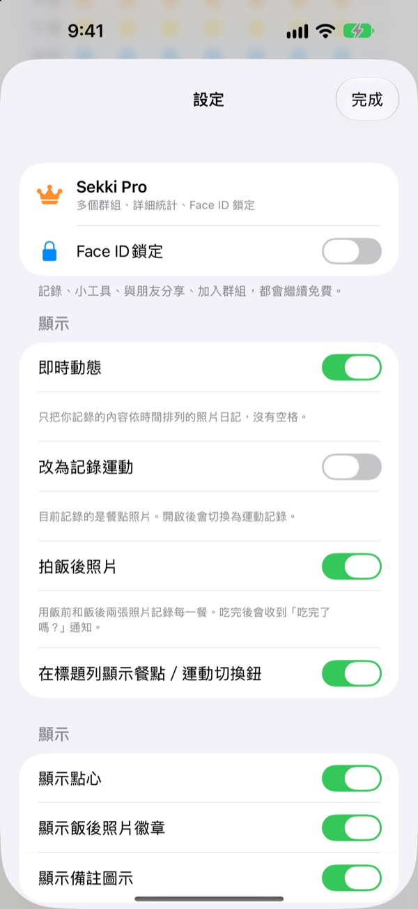

親手拍一張看看
選一個拍攝時間，再點紀錄按鈕。和 App 裡一樣，按鈕會先顯示這個時間對應的餐點。
飲食紀錄，是不是三天就放棄了？
少吃一頓早餐、忘記記一頓晚餐，空格越來越多，看著心煩，最後乾脆刪掉 App。Sekki 沒有空格。只有記下的餐點依時間順序累積，拍一餐，那天就算有紀錄。
拍下來，餐點就分好了
依照拍攝時間分進早餐、午餐、晚餐或點心。可以拍飯前和飯後照片，也能不拍照直接記錄，或寫個備註。
照片裡的食物在裝置上免費辨識，照片不會離開你的手機。

漏掉也不會減少的紀錄
一天記一餐，連續紀錄就能延續，累計紀錄天數永遠不會減少。每週和每月統計顯示的是記了幾天、幾餐，而不是達成率。
「連續 7 天」「早起鳥」等成就也會一點一點收集起來。

只提醒你要記的餐，不用打開 App
自己選擇要提醒的餐點，用餐時間也能配合自己的作息。拍好飯前照片後，直接在通知裡就能標記「吃完了」。
也能用動作按鈕、Siri、捷徑和主畫面小工具記錄，用朋友代碼加朋友，以表情和留言互相加油。

三個步驟就能開始
- 1
選擇要記錄的餐點
第一次打開時會問你要提醒哪幾餐，之後可以在設定中更改。
- 2
飯前拍一張
紀錄按鈕上已經寫好目前時間對應的餐點，點一下、拍一張就完成。
- 3
吃完點一下
在通知或小工具裡點「吃完了」，或補一張飯後照片。
不打開 App 也能記錄
- 通知
- 拍完飯前照片後收到的通知裡，直接標記吃完了
- 主畫面小工具
- 查看今天的紀錄數和正在吃的那一餐，點「吃完了」按鈕
- 鎖定畫面小工具
- 以矩形、圓形或單行查看今天的紀錄
- 動作按鈕 · Siri · 捷徑
- 按一下或說一句，就能記下吃完了
- 儲存到「照片」
- 在設定中開啟後，飲食和運動會分別存進 Sekki 相簿
- 運動模式
- 運動紀錄與飲食分開保存，本月運動次數一目了然
小工具上的「吃完了」按鈕需要 iOS 17 或以上版本。
紀錄免費，想看得更深就用 Sekki Pro
免費
- 拍照紀錄、自動分餐、飯前飯後照片、備註
- 連續紀錄、累計紀錄天數、每週每月統計、成就
- 依你選擇的餐點提醒，不打開 App 也能標記吃完了
- 小工具、動作按鈕、Siri、捷徑
- 與朋友分享飲食和運動，用表情和留言加油
- 建立 1 個群組，加入其他群組不限數量
- 在裝置上辨識食物
Sekki Pro
- 為家人、同事、運動夥伴分別建立多個群組
- 把幾週前和現在的飲食並排比較
- 整理你最常吃的食物
- 用 Face ID 或 Touch ID 鎖定 App
按年或按月訂閱，或一次購買終身版
訂閱會自動續訂，除非在目前週期結束前至少 24 小時取消。可隨時在「設定」App > Apple 帳號 > 訂閱項目中取消。服務條款：m1zz.github.io/RoutineCamera/zh-Hant/terms.html
常見問題
照片存在哪裡？
儲存在你的裝置上。在設定中開啟「自動儲存到『照片』」後，也會存進「照片」App 的 Sekki 相簿。「分享我的餐點」開啟時（預設開啟），照片會上傳到 iCloud，讓你加入的朋友看得到，可以在 設定 > 帳號與分享 中關閉。
怎麼加入朋友？
在朋友畫面分享你的 6 位朋友代碼，再輸入對方的代碼即可。也可以用逗號分隔，一次貼上多個代碼。
怎麼幫朋友加油？
打開朋友的某一餐，留下表情或簡短留言。如果對方還沒記錄，點一下空著的那一餐，輕輕提醒他記錄。
漏了一餐，連續紀錄會中斷嗎？
不會。那天只要記了任何一餐（包括點心），連續紀錄就會延續。就算整天沒記，累計紀錄天數也不會減少。
收不到通知。
請在 iOS 設定 > 通知 中確認已允許 Sekki 的通知，並確認裝置已登入 iCloud。用餐提醒時間可以在 App 的設定裡修改。
辨識食物會把照片傳到伺服器嗎？
不會。辨識在裝置上完成，照片不會離開你的手機。不限次數，完全免費。
我想刪除帳號和資料。
在 朋友 > 帳號 > 刪除帳號 中即可刪除。伺服器上的帳號和飲食資料會被刪除，無法復原。遇到問題請寄信告訴我們。
怎麼取消訂閱？
在「設定」App > Apple 帳號 > 訂閱項目 中取消。如果沒有在週期結束前至少 24 小時取消，會自動續訂。終身版只需付款一次。
問題回報、功能建議或帳號相關問題，請寄信至 leeo@kakao.com，或在 Instagram 私訊 @lee25_ios。我們通常會在一兩天內回覆。